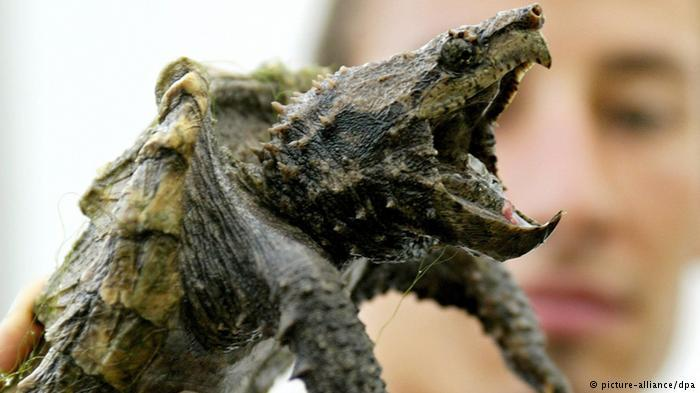

Aldabra
Aldabrachelys gigantea

Alligator snapping
Macrochelys temminckii
Merupakan spesies kura-kura darat yang relative besar di Pulau Madagaskar. Spesies ini dikenal dengan nama Sokake di Madagaskar. Spesies ini dianggap kebanyakan orang sebagai satu-satunya spesies yang terindah di antara spesies-spesies kura-kura darat lainnya. Spesies ini merupakan jenis pet yang terkenal eksotik. Panjang carapace dari spesies ini dapat mencapai 41cm dengan berat 16kg. Sang jantan dapat dikenali dengan ekornya yang lebih panjang dari pada betina.Karena keindahannya, populasi spesies ini semakin menipis. Diduga, 45000 spesies ini dibunuh setiap tahunnya sebagai makanan. Selain itu, keindahan spesies ini membuatnya sering diperdagangkan secara illegal. Karena itu spesies ini kini menjadi spesies yang dilindungi di dunia.
Jenis ini pertama di temukan di amerika serikat lalu di bawa ke brazil untuk dipelihara, karena bosan beberapa kura-kura brazil di lepaskan ke alam bebas, tetapi hal ini menghasilkan kura-kura jenis ini berkembang dengan pesat dan mengurangi populasi kura-kura asli amerika selatan menurun. Bentuknya yang unik membuat banyak orang di indonesia terpincut oleh kecantikan kura-kura ini, terhitung kura-kura brazil menjadi kura-kura peliharaan terbanyak yang di miliki orang-orang di indonesia.

Kura-kura Aldabra berasal dari Pulau Aldabra. Kura-kura ini merupakan salah satu kura-kura terbesar di dunia. Kura-kura jenis ini juga termasuk hewan yang memiliki umur terpanjang dibandingkan hewan-hewan lainnya. Seekor kura-kura Aldabra bisa mencapai umur 255 tahun. Bentuk tubuhnya maupun perilakunya sangat mirip dengan kura-kura raksasa dari Pulau Seychelles. Beberapa orang bahkan menganggap kedua jenis kura-kura tersebut merupakan spesies yang sama. Hewan tersebut memiliki cangkang yang berbentuk seperti kubah besar, berguna bagaikan baju zirah yang melindungi tubuhnya dari bagian atas hingga ke bawah. Kura-kura ini juga memiliki leher yang luar biasa panjang, sehingga cukup baginya untuk meraih dedaunan yang berada di dahan pohon yang lebih tinggi. Rata-rata panjang tubuh kura-kura jantan Aldabra bisa mencapai 1,1 meter, sedangkan panjang tubuh betina bisa mencapai sekitar 0,9 meter. Tubuh para jantan memiliki bobot yang mencapai hampir 100kg lebih berat dibandingkan dengan tubuh betina.

Sering disebut juga sebagai kura-kura Sulcata. Spesies ini berhabitat di ujung sebelah selatan dari Gurun Sahara, di bagian utara Afrika. Merupakan spesies kura-kura terbesar yang ketiga di dunia dan merupakan spesies yang termasuk dalam Genus Centrochelys. Sebutan ‘Sulcata’ yang tersemat dalam nama spesies ini berasal dari bahasa Latin ‘Succus’ yang berarti “kerutan”, yang menunjuk pada kerutan-kerutan di sisiknya. Berat tubuh spesies ini mencapai 105kg sedangkan panjang tubuhnya bisa mencapai 83cm. Panjang usia dari spesies ini bisa berkisar 50 hingga 150 tahun. Spesies yang satu ini cukup menyenangkan dan menarik minat orang-orang, sehingga tak jarang yang menjadikannya sebagai peliharaan.
Kura Kura air tawar terbesar di dunia berdasarkan berat mereka . kura kura Ini berburu dengan menggunakan mulut mereka yang disamarkan dan memiliki lidah seperti cacing di ujung lidahnya untuk memikat mangsanya, mangsa nya bisa apa saja dari ikan ,ular ,burung air bahkan kura-kura lainnya. mereka berburu mangsa dengan cara Berbaring sepenuhnya tanpa bergerak dengan mulut terbuka lebar, hal ini dilakukan hanya untuk menunggu mangsa mendekati mulutnya.